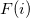
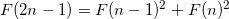
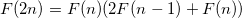
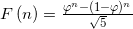

Problem 104 was probably the most difficult I've tackled so far. At first I've attempted brute-force, but after several long minutes of runtime realized it just won't work. And well I did, because it turns out the number I'm looking for is over 68000 digits long. Such numbers are quite consuming to process.
So I had to resort to some numerical tricks to reach the solution.
Observation #1 To find numbers where the low 9 digits are pandigital, we don't really have to consider the whole numbers, but only their lowest 9 digits. The higher digits don't affect the low ones in addition, so once can generate the 9 lowest digits of the Fibonacci numbers easily. These are trivially checked for being pandigital, so it's simple to generate "candidates" for the answer. This way I quickly find out the s for which  has pandigital low digits.
Observation #2 Once we have the indices of candidates, we can directly find the numbers by using the following cool formula for Fibonacci numbers:


As you can see, the runtime of such a computation is logarithmic, and with some simple caching it's a very efficient algorithm for generating the th Fibonacci number. So I could just test my candidates for upper-digit pandigital this way, and the problem was solved in about a minute of runtime.
Observation #3 I'm pretty sure this can be done even more efficiently, using the golden ratio:

Since we only need the upper 9 digits, using the golden ratio with sufficient accuracy, the Fibonacci numbers can be approximated enough to see the exact upper 9 digits. I'm sure this method is much faster than the one I've used.